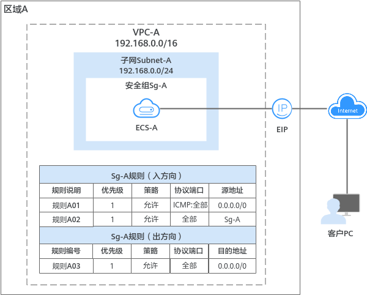
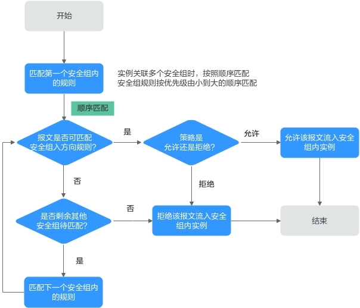
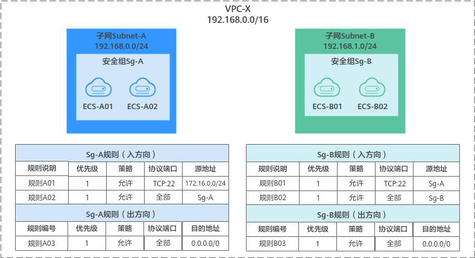
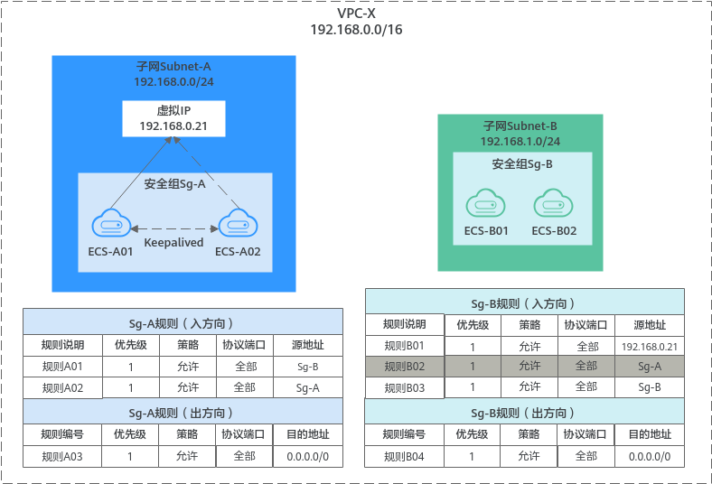
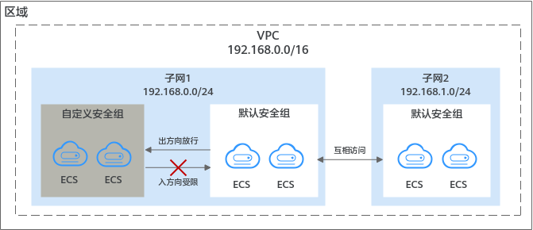
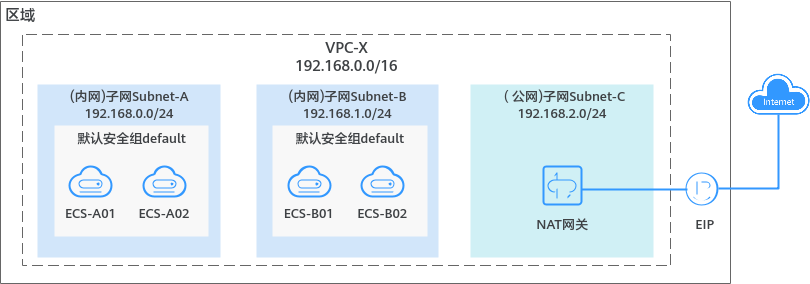

安全组
1. 安全组和安全组规则概述¶
1.1. 安全组¶
安全组是一个逻辑上的分组，为具有相同安全保护需求并相互信任的云服务器、云容器、云数据库等实例提供访问策略。安全组创建后，用户可以在安全组中定义各种访问规则，当实例加入该安全组后，即受到这些访问规则的保护。
您在创建实例时（比如云服务器），必须将实例加入一个安全组，如果此前您还未创建任何安全组，那么系统会自动为您创建默认安全组并关联至该实例。除了默认安全组，您还可以根据业务需求创建自定义安全组并关联至实例。一个实例可以关联多个安全组，多个安全组按照优先级顺序依次匹配流量。
安全组中包括入方向规则和出方向规则，您可以针对每条入方向规则指定来源、端口和协议，针对出方向规则指定目的地、端口和协议，用来控制安全组内实例入方向和出方向的网络流量。以图1为例，在区域A内，某客户有一个虚拟私有云VPC-A和子网Subnet-A，在子网Subnet-A中创建一个云服务器ECS-A，并为ECS-A关联一个安全组Sg-A来保护ECS-A的网络安全。
- 安全组Sg-A的入方向存在一条放通ICMP端口的自定义规则，因此可以通过个人PC (计算机)**ping**通ECS-A。但是安全组内未包含允许SSH流量进入实例的规则，因此您无法通过个人PC远程登录ECS-A。
- 当ECS-A需要通过EIP访问公网时，由于安全组Sg-A的出方向规则允许所有流量从实例流出，因此ECS-A可以访问公网。
图1 安全组架构图

{kind=link}
说明
您可以免费使用安全组资源，当前不收取任何费用。
1.2. 安全组规则¶
- 安全组中包括入方向规则和出方向规则，用来控制安全组内实例的入方向和出方向的网络流量。
- 入方向规则：控制外部请求访问安全组内的实例，即流量流入实例。
- 出方向规则：控制安全组内实例访问外部的请求，即流量从实例流出。
- 安全组规则由协议端口、源地址/目的地址等组成，关键信息说明如下：
- 策略：支持允许或拒绝。当流量的协议、端口、源地址/目的地址成功匹配某个安全组规则后，会对流量执行规则对应的策略，允许或拒绝流量。
- 优先级：优先级可选范围为1-100，数字越小，规则优先级级别越高。安全组规则匹配流量时，首先按照优先级进行排序，其次按照策略排序，拒绝策略高于允许策略，更多信息请参见流量匹配安全组规则的顺序。
- 类型：支持设置IPv4和IPv6协议的规则。
- 协议端口：包括网络协议类型和端口范围。
- 网络协议：匹配流量的协议类型，支持TCP、UDP、ICMP和GRE协议。
- 端口范围：匹配流量的目的端口，取值范围为：1～65535。
-
源地址或目的地址：在入方向中，匹配流量的源地址。在出方向中，匹配流量的目的地址。
您可以使用IP地址、安全组、IP地址组作为源地址或者目的地址。
- IP地址：某个固定的IP地址或者网段，支持IPv4和IPv6地址。比如：192.168.10.10/32（IPv4地址）、192.168.1.0/24（IPv4网段）、2407:c080:802:469::/64（IPv6网段）
- 安全组：目标安全组和当前安全组位于同一区域，表示流量匹配目标安全组内所有实例的私有IP地址。比如：当安全组A内有实例a，安全组B内有实例b，在安全组A的入方向规则中，放通源地址为安全组B的流量，则来自实例b的内网访问请求被允许进入实例a。
- IP地址组：IP地址组是一个或者多个IP地址的集合，对于安全策略相同的IP网段和IP地址，此处建议您使用IP地址组简化管理。
1.3. 安全组及规则的工作原理¶
- 安全组是有状态的。如果您从实例发送一个出站请求，且该安全组的出方向规则是放通的话，那么无论其入方向规则如何，都将允许该出站请求的响应流量流入。同理，如果该安全组的入方向规则是放通的，那无论出方向规则如何，都将允许入站请求的响应流量可以流出。
-
安全组使用连接跟踪来标识进出实例的流量信息，入方向安全组的规则变更，对原有流量立即生效。出方向安全组规则的变更，不影响已建立的长连接，只对新建立的连接生效。
当您在安全组内增加、删除、更新规则，或者在安全组内添加、移出实例时，系统会自动清除该安全组内所有实例入方向的连接，详细说明如下：
- 由入方向流量建立的连接，已建立的长连接将会断开。所有入方向流量立即重新建立连接，并匹配新的安全组入方向规则。
- 由出方向流量建立的连接，已建立的长连接不会断开，依旧遵循原有安全组规则。出方向流量新建立的连接，将会匹配新的安全组出方向规则。
须知
对于已建立的长连接，流量断开后，不会立即建立新的连接，需要超过连接跟踪的老化时间后，才会新建立连接并匹配新的规则。比如，对于已建立的ICMP协议长连接，当流量中断后，需要超过老化时间30s后，将会新建立连接并匹配新的规则，详细说明如下：
-
不同协议的连接跟踪老化时间不同，比如已建立连接状态的TCP协议连接老化时间是600s，ICMP协议老化时间是30s。对于除TCP和ICMP的其他协议，如果两个方向都收到了报文，连接老化时间是180s，如果只是单方向收到了报文，另一个方向没有收到报文，则连接老化时间是30s。
-
TCP协议处于不同状态下的连接老化时间也不相同，比如TCP连接处于ESTABLISHED（连接已建立）状态时，老化时间是600s，处于FIN-WAIT（连接即将关闭）状态时，老化时间是30s。
-
安全组规则遵循白名单原理，当在规则中没有明确定义允许或拒绝某条流量时，安全组一律拒绝该流量流入或者流出实例。
表1 安全组规则说明
| 方向 | 策略 | 类型 | 协议端口 | 源地址/目的地址 |
|---|---|---|---|---|
| 入方向 | 允许 | IPv4 | 全部 | 源地址：当前安全组 |
| 入方向 | 允许 | IPv6 | 全部 | 源地址：当前安全组 |
| 出方向 | 允许 | IPv4 | 全部 | 目的地址：0.0.0.0/0 |
| 出方向 | 允许 | IPv6 | 全部 | 目的地址：::/0 |
1.4. 流量匹配安全组规则的顺序¶
一个实例可以关联多个安全组，并且一个安全组内可以包含多个安全组规则。安全组规则匹配流量时，首先按照优先级进行排序，其次按照策略匹配，拒绝策略高于允许策略。如[[|图2]]所示，以入方向的流量为例，实例的网络流量将按照以下原则匹配安全组规则，入方向和出方向的流量匹配顺序相同。
-
首先，流量按照安全组的顺序进行匹配。您可以自行调整安全组顺序，安全组序号越小，表示优先级越高。
比如，安全组A的序号为1，安全组B的序号为2，安全组A的优先级高于安全组B，流量优先匹配安全组A内的入方向规则。
-
其次，流量按照安全组规则的优先级和策略进行匹配。
-
先按照安全组规则优先级匹配，优先级的数字越小，优先级越高。
比如安全组规则A的优先级为1，安全组规则B的优先级为2，安全组规则A的优先级高于安全组规则B，流量优先匹配安全组规则A。
-
安全组规则优先级相同的情况下，再按照策略匹配，拒绝策略高于允许策略。
-
-
流量按照协议端口和源地址，遍历了所有安全组内的入方向规则。
- 如果成功匹配某个规则，则执行以下操作：
- 如果规则的策略是允许，则允许该流量访问安全组内实例。
- 如果规则的策略是拒绝，则拒绝该流量访问安全组内实例。
- 如果未匹配上任何规则，则拒绝该流量访问安全组内的实例。
- 如果成功匹配某个规则，则执行以下操作：
图2 安全组匹配顺序

{kind=link}
1.5. 安全组配置示例¶
您可以在安全组内放通指定IP地址，允许指定IP地址访问安全组内实例，或者在某个安全组内放通另外一个安全组，实现不同安全组内的实例内网互通。通过安全组规则，您可以灵活控制组网内流量的走向，以确保您的网络安全，以下为您提供了典型的安全组应用示例。
如图3所示，在VPC-X中有两个子网Subnet-A和Subnet-B，Subnet-A中的ECS承载同一类业务，需要相同的网络连接请求，因此均关联至安全组Sg-A。同理，Subnet-B中的ECS均关联至另外一个安全组Sg-B。
- 安全组Sg-A入方向规则A01允许从指定IP地址 (172.16.0.0/24)访问安全组内实例的SSH(22)端口，用于远程登录安全组内的Linux云服务器。
- 安全组Sg-A入方向规则A02允许安全组内的实例可使用任何协议和端口互相通信，即子网Subnet-A内的ECS网络互通。
- 安全组Sg-B入方向规则B01允许Sg-A内的实例访问Sg-B内实例的SSH(22)端口，即通过子网Subnet-A的ECS可远程登录Subnet-B内的ECS。
- 安全组Sg-B入方向规则B02允许安全组内的实例可使用任何协议和端口互相通信，即子网Subnet-B内的ECS网络互通。
- 两个安全组的出方向规则允许所有流量从安全组内实例流出。
图3 控制外部指定IP地址或安全组对实例的访问

{kind=link}
如果您通过中间网络实例在不同子网的实例之间转发流量，比如图4中，子网Subnet-A的ECS通过虚拟IP和子网Subnet-B的ECS互相通信。由于存在中间网络实例，此时安全组规则的源地址选择实例所在的安全组时，无法放通中间网络实例转发的流量，源地址必须设置成中间网络实例的私有IP地址或者子网网段。
在VPC-X中有两个子网Subnet-A和Subnet-B，Subnet-A中的ECS关联至安全组Sg-A，Subnet-B中的ECS关联至安全组Sg-B。通过虚拟IP将Subnet-A中的ECS搭建成Keepalived高可用集群，后端服务器ECS-A01和ECS-A02形成主备模式，对外使用虚拟IP进行通信。
- 安全组Sg-A入方向规则A01允许Sg-B内的实例使用任何协议和端口访问Sg-A内的实例。
- 安全组Sg-B入方向规则说明如下：
- 规则B02：允许Sg-A内的实例使用私有IP地址访问Sg-B内实例，但是当前组网下，Sg-A内的实例和Sg-B内的实例通信需要经过虚拟IP，此时虚拟IP的流量无法流入Sg-B内的实例，该规则不适用于当前组网。
- 规则B01：允许虚拟IP(192.168.0.21)使用任何协议和端口访问Sg-B内的实例。当前组网中，您还可以将源地址设置成子网Subnet-A的网段192.168.0.0/24。
图4 控制虚拟IP访问安全组内实例

{kind=link}
{kind=link}
说明：
更多安全组规则配置示例，请参见安全组配置示例。
1.6. 安全组配置流程¶
{kind=link}
表2 安全组配置流程说明
| 序号 | 步骤 | 说明 | 操作指导 |
|---|---|---|---|
| 1 | 创建安全组 | 创建安全组时候，您可以使用系统提供的规则。预置的部分安全组规则，详细信息请参见安全组模板说明。 | 创建安全组 |
| 2 | 配置安全组规则 | 安全组创建完成后，如果模板里面的规则不能满足业务要求，您还可以在安全组中添加新的安全组规则，或者修改已有的安全组规则。 | 添加安全组规则快速添加多条安全组规则 |
| 3 | 在安全组中添加实例 | 创建实例的时候，会自动将实例加入一个安全组内，实例将会受到安全组的保护。如果一个安全组无法满足您的要求，您可以将实例加入多个安全组。 | 在安全组中添加或移出实例 |
1.7. 安全组的使用限制¶
-
为了确保良好的网络性能体验，建议一个实例最多关联5个安全组。
-
建议一个安全组关联的实例数量不应超过6000个，否则会引起安全组性能下降。
-
在一个安全组中，对于入方向规则来说，源地址是安全组的规则数量+源地址是IP地址组的规则数量+端口是不连续端口号的规则数量 ≤ 128条，否则超过数量的安全组规则将不生效。出方向的限制和入方向一致。
- 源地址是安全组时，包括本安全组和其他安全组。
- 不连续端口号取值示例为22,25,27。
-
如果您添加安全组规则时，使用IP地址组或者不连续端口，那么该安全组规则对不同规格云服务器的生效情况存在差异，为了避免您的安全组规则不生效，请您查看表3了解详情。
表3 安全组规则限制
安全组规则 云服务器类型 添加安全组规则时，“源地址”和“目的地址”可选择“IP地址组” 不支持的X86云服务器规格如下：通用计算型（S1型、C1型、C2型 ）内存优化型（M1型）高性能计算型（H1型）磁盘增强型（ D1型）GPU加速型（G1型、G2型）超大内存型（E1型、E2型、ET2型） 添加安全组规则时，“协议端口”可配置为不连续端口号 不支持的X86云服务器规格如下：通用计算型（S1型、C1型、C2型 ）内存优化型（M1型）高性能计算型（H1型）磁盘增强型（ D1型）GPU加速型（G1型、G2型）超大内存型（E1型、E2型、ET2型）
所有鲲鹏云服务器规格不支持配置不连续端口。如果您在鲲鹏云服务器中添加安全组规则时，使用了不连续端口号，那么除了该条规则不会生效，该规则后的其他规则也不会生效。比如：您先配置了安全组规则A（不连续端口号22,24），再配置了下一条安全组规则B（独立端口号9096），则安全组规则A和B均不会生效。 -
当您的组网中存在以下情况时，来自ELB和VPCEP的流量不受网络ACL和安全组规则的限制。
-
ELB实例的监听器开启“获取客户端IP”功能时，不受限制。
比如规则已明确拒绝来自ELB实例的流量进入后端云服务器，此时该规则无法拦截来自ELB的流量，流量依然会抵达后端云服务器。
-
VPCEP实例类型为“专业型”时，不受限制。
-
1.8. 实践建议¶
- 请您遵循白名单原则配置安全组规则，即安全组内实例默认拒绝所有外部的访问请求，通过添加允许规则放通指定的网络流量。
- 添加安全组规则时，请遵循最小授权原则。例如，放通22端口用于远程登录云服务器时，建议仅允许指定的IP地址登录，谨慎使用0.0.0.0/0（所有IP地址）。
- 请您尽量保持单个安全组内规则的简洁，通过不同的安全组来管理不同用途的实例。如果您使用一个安全组管理您的所有业务实例，可能会导致单个安全组内的规则过于冗余复杂，增加维护管理成本。
- 您可以将实例按照用途加入到不同的安全组内。例如，当您具有面向公网提供网站访问的业务时，建议您将运行公网业务的Web服务器加入到同一个安全组，此时仅需要放通对外部提供服务的特定端口，例如80、443等，默认拒绝外部其他的访问请求。同时，请避免在运行公网业务的Web服务器上运行内部业务，例如MySQL、Redis等，建议您将内部业务部署在不需要连通公网的服务器上，并将这些服务器关联至其他安全组内。
- 对于安全策略相同的多个IP地址，您可以将其添加到一个IP地址组内统一管理，并在安全组内添加针对该IP地址组的授权规则。当IP地址发生变化时，您只需要在IP地址组内修改IP地址，那么IP地址组对应的安全组规则将会随之变更，无需逐次修改安全组内的规则，降低了安全组管理的难度，提升效率。具体方法，请参见使用IP地址组提升安全组规则管理效率。
- 请您尽量避免直接修改已运行业务的安全组规则。如果您需要修改使用中的安全组规则，建议您先克隆一个测试安全组，然后在测试安全组上进行调试，确保测试安全组内实例网络正常后，再修改使用中的安全组规则，减少对业务的影响。具体方法，请参见克隆安全组。
-
您在安全组内新添加实例，或者修改安全组的规则后，此时不需要重启实例，安全组规则会自动生效。
如果您的安全组规则配置完未生效，请参考为什么配置的安全组规则不生效？。
父主题： 安全组
2. 默认安全组概述¶
如果您未创建任何安全组，那么您在首次使用安全组时，系统会自动为您创建一个默认安全组。
- 默认安全组名称为default，为了区分默认安全组和您自己创建的安全组，不支持修改默认安全组名称。
- 您无法删除默认安全组，可以在默认安全组内修改已有规则或者添加新的规则。
- 默认安全组仅确保安全组内实例互通，默认拒绝所有外部请求进入实例，如果您需要登录默认安全组关联的实例，请参见通过本地服务器远程登录云服务器添加安全组规则放通指定端口。
- 如果实际业务对不同用途实例的安全要求存在差异，那么建议您创建自定义安全组，并将实例按照用途加入到不同的安全组内。
说明：
您可以免费使用安全组资源，当前不收取任何费用。
2.1. 默认安全组规则说明¶
默认安全组规则说明如下：
- 入方向规则：入方向流量受限，只允许安全组内实例互通，拒绝来自安全组外部的所有请求进入实例。
- 出方向规则：出方向流量放行，允许所有请求从安全组内实例流出。
图1 默认安全组

{kind=link}
默认安全组规则的详细说明如表1所示。
表1 默认安全组规则
| 方向 | 策略 | 类型 | 协议端口 | 源地址/目的地址 | 描述 |
|---|---|---|---|---|---|
| 入方向 | 允许 | IPv4 | 全部 | 源地址：默认安全组（default） | 针对全部IPv4协议，允许安全组内的实例可使用任何协议和端口互相通信，确保安全组内实例网络互通。 |
| 入方向 | 允许 | IPv6 | 全部 | 源地址：默认安全组（default） | 针对全部IPv6协议，允许安全组内的实例可使用任何协议和端口互相通信，确保安全组内实例网络互通。 |
| 出方向 | 允许 | IPv4 | 全部 | 目的地址：0.0.0.0/0 | 针对全部IPv4协议，允许所有流量从安全组内实例流出，即实例可访问外部任意IP和端口。 |
| 出方向 | 允许 | IPv6 | 全部 | 目的地址：::/0 | 针对全部IPv6协议，允许所有流量从安全组内实例流出，即实例可访问外部任意IP和端口。 |
2.2. 默认安全组应用示例¶
如图2所示，VPC-X内有三个子网，其中子网Subnet-A和Subnet-B中的ECS均关联默认安全组，默认安全组仅确保安全组内实例互通，默认拒绝所有外部请求进入实例。ECS-A01、ECS-A02、ECS-B01和ECS-B02之间内网网络互通，但是无法接受来自NAT网关的流量。
如果您需要放通NAT网关的流量，您可以在默认安全组中添加对应的规则，或者创建新的安全组，并关联给实例使用。
图2 默认安全组应用示例

{kind=link}